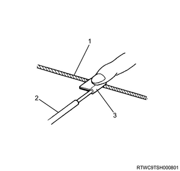
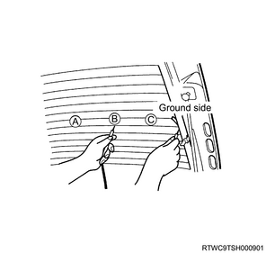
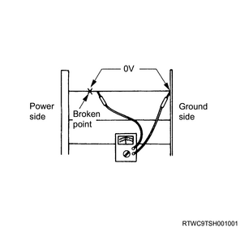
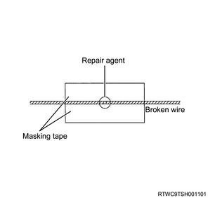
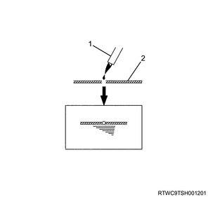

Rear defogger heat wire inspection
Note
- The heat wire is stretched along the inside of the glass.
- Wipe horizontally along the wires with a soft cloth to clean.
Caution
- Do not use glass cleaners, etc.
Note
- When measuring voltage, wrap the end of the negative probe with tin foil and manually press the foil into the wire as shown in the diagram.

- Heat wire
- Test probe
- Tin foil
1. Turn ON the ignition switch.
2. Turn ON the rear defogger switch.
3. Measure a voltage using tester.
Note
- Using a voltage meter, measure the voltage between 2 locations of the heat wire and the negative (-) terminal.
- Check that voltage decreases when proceeding from A in the diagram to B and C.

Note
- If there is a location where voltage suddenly drops to 0 V, it means that there is a location where the wire is broken between that location and the power supply side.
- Move the test probe from the location where voltage dropped to 0 V to the power supply side and measure the location where voltage rises suddenly.

Repairing the broken heat wire
Note
- Clean the end of the broken heat wire with unleaded gasoline.
- Apply masking tape along the top and bottom of the wire at the location where it is broken.

Note
- Prepare a well-mixed repairing agent (DuPont paste No. 4817 or equivalent).
- Apply a small amount of the repairing agent to the wire using a fine-tipped brush.

- Heat wire
- Fine-tipped brush
Note
- Remove the masking tape a few minutes later.
- Leave for 24 hours or more.